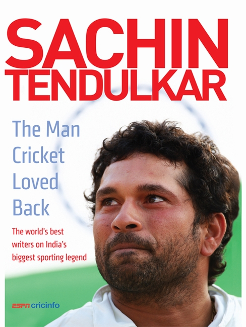
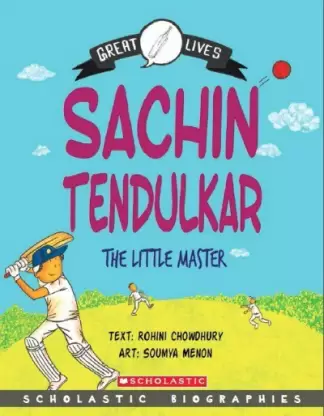

Sachin: Play it My Way
Playing It My Way is the autobiography of former Indian cricketer Sachin Tendulkar. It was launched on 5 November 2014 in Mumbai. The book summarises Tendulkar's early days, his 24 years of international career and aspects of his life.

Sachin: Chase Your Dream
My father set me free at the age of eleven when he told me ‘Chase your dreams, but make sure you don’t find shortcuts to them.’ In his career spanning 24 years, hardly any records have escaped Sachin Tendulkar’s masterly touch.

The Man Cricket Loved Back
Sachin Tendulkar's retirement from the sport in November 2013 was among the most-watched cricket events of the year, one that tugged at the heartstrings of Indians and cricket lovers worldwide. ..

Sachin: The Littile Master
Sachin Ramesh Tendulkar, AO is an Indian former international cricketer who captained the Indian national team. He is regarded as one of the greatest batsmen in the history of cricket. He is the all-time highest run-scorer in both ODI and Test cricket with more than 18,000 runs and 15,000 runs, respectively